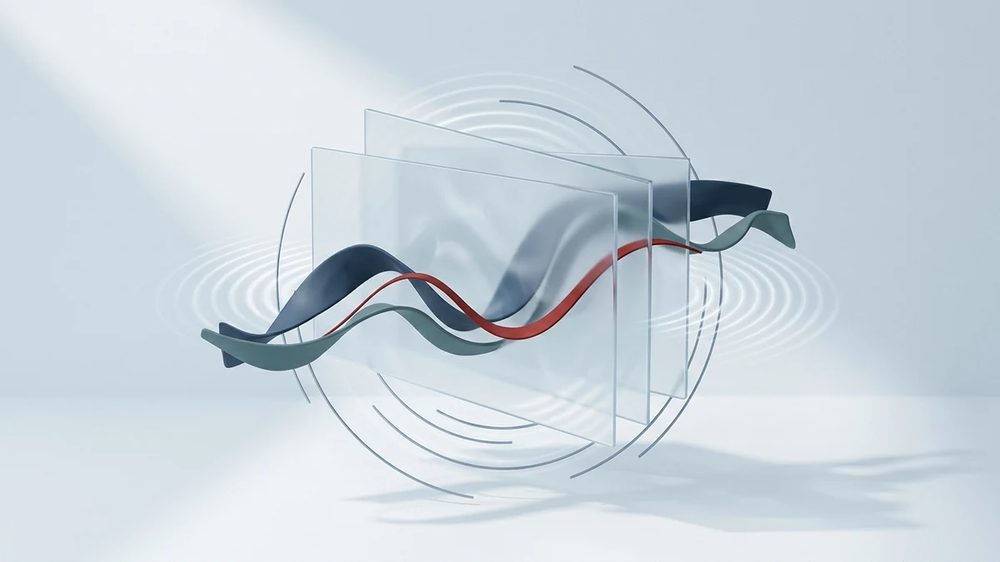
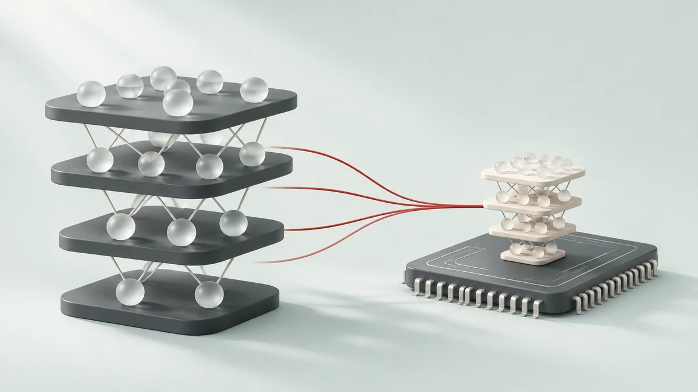
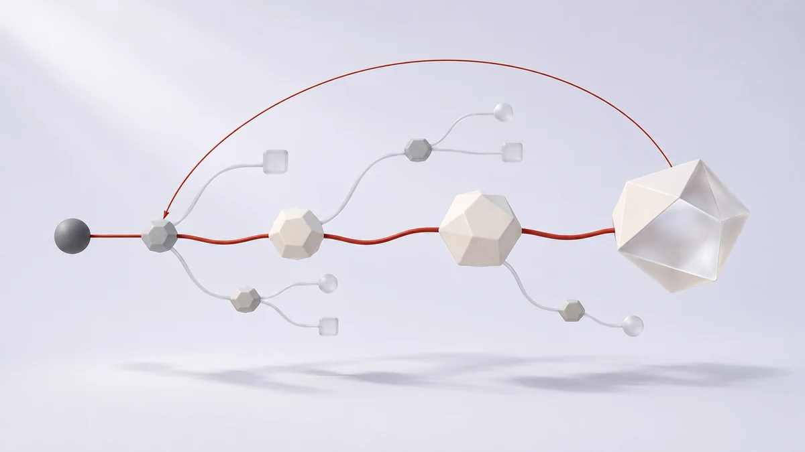
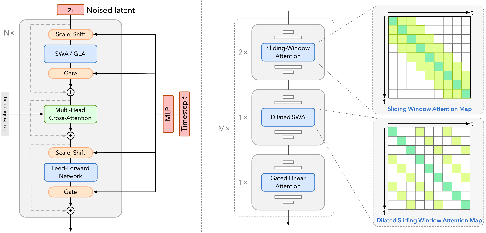
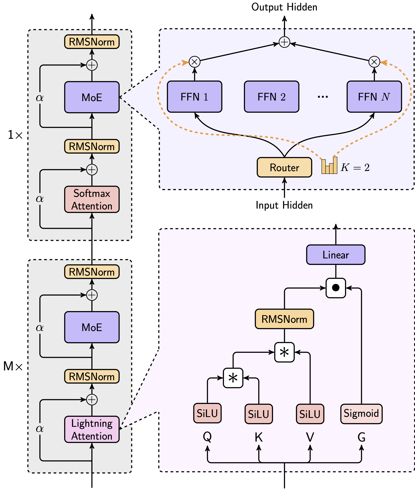

Interactive Audiovisual Worlds
VirtualGeneral audio and video generation, real-time interactive video-audio world models, and programmatic code-driven video and audio synthesis.
面向实时智能交互：以高效基础架构为底座，迈向感官生成、物理具身与自主进化
Toward Real-Time Interactive Intelligence: Building Efficient, Self-Improving Systems for Audiovisual World Interaction and Physical Embodiment
Intelligence reaches its full potential through interaction. Today's AI interacts primarily through text, code, and voice — yet the next leap moves into real-time audiovisual worlds (virtual interaction) and embodied robotics (physical interaction). Closing that loop demands two foundations at once: Efficient AI to guarantee real-time responsiveness, and Agentic RSI to continually learn from interaction and push past static capability ceilings.

General audio and video generation, real-time interactive video-audio world models, and programmatic code-driven video and audio synthesis.
World-Action Models (Kairos), task-agnostic agentic embodied AI (Auriga), and VLA / expressive humanoid control (RoboMirror, RoboPerform).

Linear / hybrid attention and Vision SSMs (MiniMax-01, Kairos-3.0, LocalMamba), dynamic token compression and caching (VLA-Cache, DASH, SparseVLM), and knowledge distillation (DIST+, DiffKD, FreeKD).

Recursive self-improvement for LLM / MLLM agents and embodied agents — closing the interaction loop so systems continually verify, refine, and expand their capability ceiling.
We replace standard quadratic temporal attention with a hybrid design composed of linear- and local-attention mechanisms, enabling real-time modeling of long video sequences with strong temporal coherence and causal reasoning.

For the first time on a large scale, we implemented a mixture of linear and softmax attention architecture. This model has 456B parameters with a MoE structure activating 45.9B parameters per inference.
